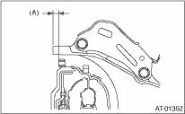

1. Install the clip to the converter case.
2. Install the oil pump shaft to the torque converter clutch assembly, and then make sure the clip is secured on the groove.
3. Insert the input shaft while rotating it lightly by hand, and then check the amount of protrusion.
Normal protrusion A:
50 — 55 mm (1.97 — 2.17 in)

4. While holding the torque converter clutch assembly by hand, carefully install it to the torque converter case. Take care not to damage the bushing. Do not allow the oil pump shaft bushing to touch the starter shaft part of the oil pump cover inappropriately.
5. Turn the oil pump shaft lightly by hand to engage the spline securely, and then check the converter case and torque converter clutch assembly dimension A.
Dimension A:
Non-turbo model
1.1 — 1.3 mm (0.043 — 0.051 in)

|
(A) |
Dimension A |
Turbo model
2.7 — 2.9 mm (0.106 — 0.114 in)
|
(A) |
Dimension A |
6. Install the transmission assembly to the vehicle.